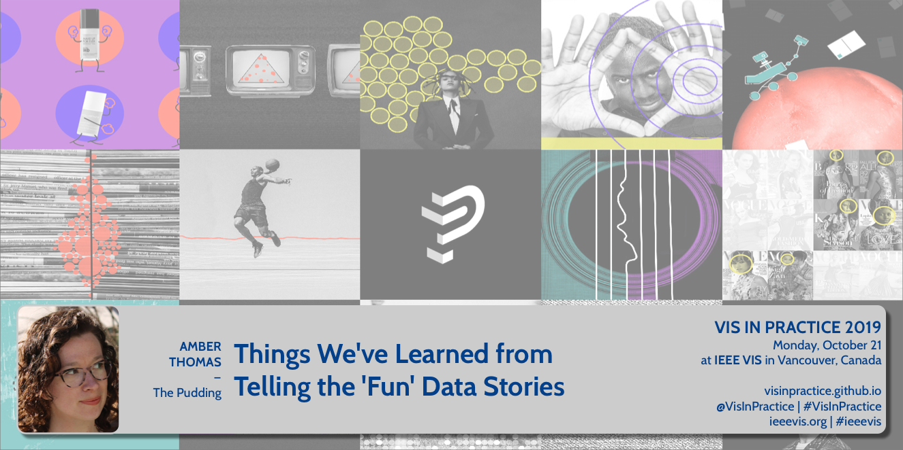
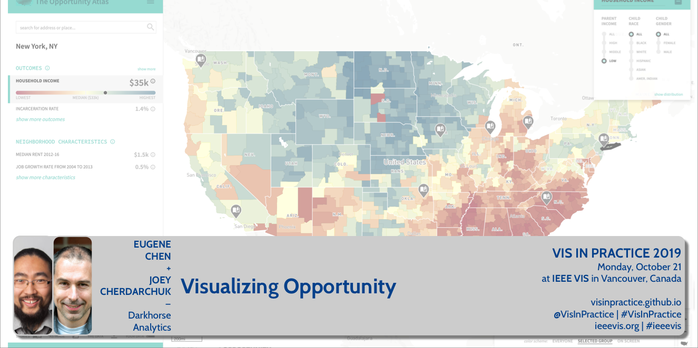
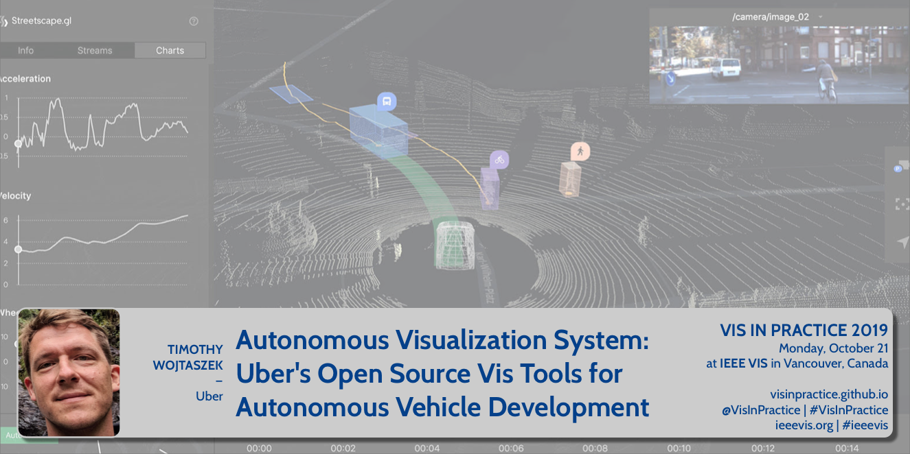
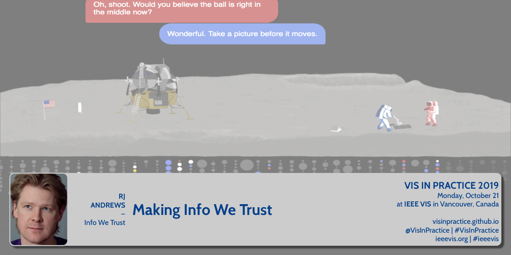
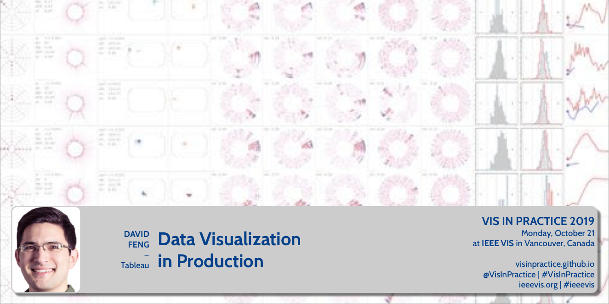
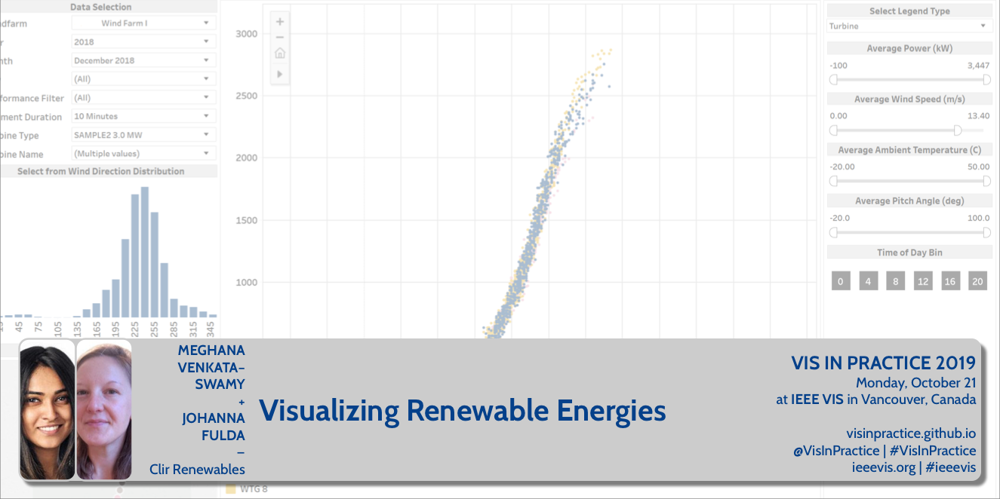
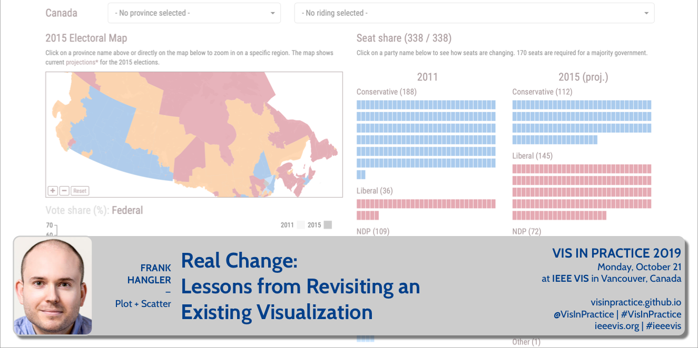
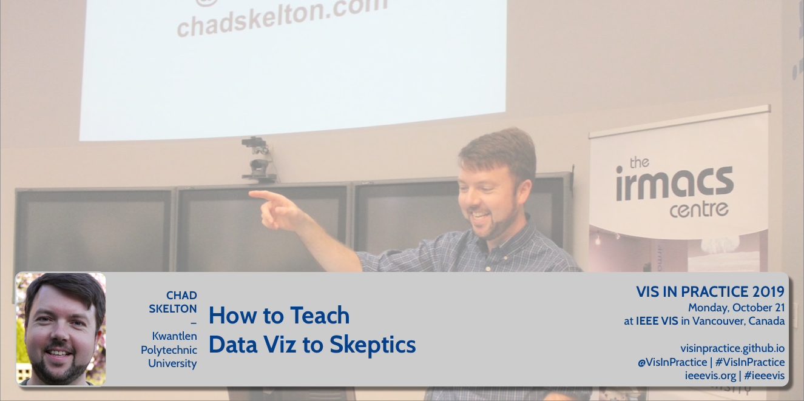
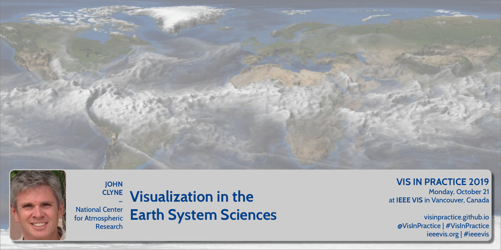
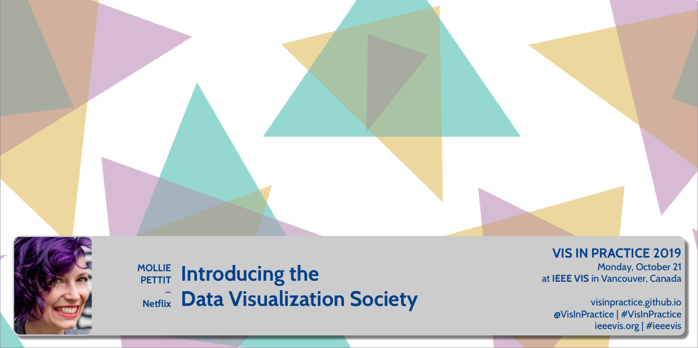

Monday, October 21, 2019 at the Vancouver Convention Centre
The VisInPractice program is dedicated to those interested in the practical aspects of data visualization and visual analytics. The focus was on how to solve real use cases, in contrast to the academic perspectives used in other IEEE VIS events.
Unlike most other events at IEEE VIS, VisInPractice talks have no associated papers.
Click on a speaker to see their talk video and bio:
Session1
- Amber Thomas: Things We’ve Learned From Telling the ‘Fun’ Data Stories - video
- Eugene Chen + Joey Cherdarchuk: Visualizing Opportunity - video
- Tim Wojtaszek: Autonomous Visualization System / Uber’s Open Source Vis Tools for Autonomous Vehicle Development - video
Session 2
- RJ Andrews: Making Info We Trust - video
- David Feng: Data Visuaization in Production - video
- Fishbowl panel with RJ Andrews, David Feng, Cydney Nielsen, and other panelists - video
Session 3
- Meghana Venkataswamy + Johanna Fulda: Visualizing Renewable Energies - video
- Frank Hangler: Real Change / Lessons from Revisiting an Existing Visualization - video
- Chad Skelton: How to Teach Data Viz to Skeptics - video
Session 4
- Callie Neylan: Excel as Digital Infrastructure / What Would Jane Jacobs Do? - video
- John Clyne: Visualization in the Earth System Sciences - video
- Mollie Pettit: Introducing the Data Visualization Society - video
Talk Descriptions + Videos
 SPEAKER: Amber Thomas (@ProQuesAsker), The Pudding
DESCRIPTION: When we talk about topics that are debated in culture, you may immediately think of heated, divisive topics publicly debated during political campaigns. Or perhaps you’re thinking more of a low-key dispute between friends over beer. At The Pudding, an online editorial for visually-led stories, we focus on adding data to both types of debate. The topics and even “serious-ness” of stories we choose to write about vary widely, and we are often asked why we continue to write about “fun” topics with so many more pressing matters at hand. In this talk, I will discuss how we tell stories, the things we’ve learned from telling “fun” stories, and why we think the internet is better with both.
SPEAKER BIO: Amber is a Senior Journalist Engineer at the online editorial, The Pudding. While she has been creating data-driven stories online since 2017, she is, by training, a marine biologist. After a few years of studying animals that lived beneath the waves and communicating science to anyone that would listen, she career-pivoted and has been working with the fine folks at The Pudding ever since.
 SPEAKER: Eugene Chen (@ideaOwl) + Joey Cherdarchuk (@cherdarchuk), Darkhorse Analytics
DESCRIPTION: The Opportunity Atlas visualizes research done at Harvard and Brown Universities tracing the roots of poverty and incarceration back to the neighbourhoods in which children grew up. Its goal is to enable policy solutions that will empower families throughout the United States to rise out of poverty and achieve better life outcomes. We’ll look at some of the technical and design challenges involved in creating a tool that shares insights found in the over two-hundred-million data points being mapped, exploring the methods used to ensure both high level communication to the general public and detailed analysis by policy-makers and non-profits can be performed with the tool.
SPEAKER BIOS: Eugene leads the technical team at Darkhorse Analytics. He enjoys combining his creativity, coding, and design into building elegant, interactive tools and visualizations. Eugene was shortlisted for an Information is Beautiful Award for WorldChatClock.com. He is an Electrical Engineering graduate from the University of Alberta and his background includes roles in development and program management at Microsoft and Blackberry. Beyond technical skills, Eugene is also involved in grassroots organizations such as Edmonton NextGen. He participates in open data initiatives such as Alberta’s Open Data Competition, BetaCityYEG and the federal government’s Open Data/Open Government Consultations.
Joey is a cofounder and the design lead at Darkhorse Analytics. A data visualization expert, his work has been highlighted in the New York Times, the Huffington Post, and the Washington Post. His Breathing City graphic was shortlisted for an Information is Beautiful award. Joey developed his design expertise after a 15-year quantitative analysis and consulting career. It is this analytical foundation that helps him create visuals that are both clear and engaging. He offers training on data visualization and his Data Looks Better Naked series is used in visualization curricula around the world.
 SPEAKER: Timothy Wojtaszek, Uber
DESCRIPTION: What does it take to visualize a robots understanding? What is necessary when merging the sensor data, algorithm output, and the human interpretation to make a meaningful and useful visualization tool in this space? This talk will cover Uber’s Open Source project AVS and give insights into building the data model to capture the visual and data elements specific to the autonomous realm and being able to model the important relationships of the elements within and then combining layers of data into a coherent whole. I will discuss how critical performance is and how Deck.gl, Uber Visualization’s geospatial framework, has enabled us to focus on what to display, rather than how to display it.
SPEAKER BIO: Timothy Wojtaszek has found himself in visualization in one way or another. Starting with Postscript and fonts at Adobe to his current role as a Senior Engineer II in Uber’s Visualization Team helping to bring autonomous systems a little closer to reality.
 SPEAKER: RJ Andrews (@infowetrust), Info We Trust
DESCRIPTION: RJ Andrews shares his enthusiasm for making data stories. Tours through his practice will reveal many thorny challenges encountered—and some creative solutions found. Humanizing aspects of his process will be highlighted, including: The primacy of craft. Technology agnosticism. Sensational design. Pictorial composition. Use of embodied cognition to arrange new data-forms.
SPEAKER BIO: RJ Andrews is the author of the book Info We Trust, a lavish adventure exploring how to inspire the world with data. He blends creative arts and data science to inform. His projects have won recognition and been translated across the world. As an independent creative he does all of his own data processing, analysis, illustration, coding, and motion design using a variety of tools. When not working on his own data stories, RJ helps organizations solve information problems. Learn more at infowetrust.com.
 SPEAKER: David Feng (@dyfbrain), Tableau
DESCRIPTION: Building custom visualizations is fun, but a thing they don’t teach at VIS (last I checked) is what it’s like building them for a live, production software environment. I would give some examples of fun, possibly kooky, visualizations I have developed in my professional life and the hidden support costs that came along for the ride. I could also talk a bit about how to mitigate those costs, and the pros and cons there.
SPEAKER BIO: After studying computer graphics at Northwestern University, David worked on multivariate and uncertain data visualization at UNC Chapel Hill. He then spent the next 8.5 years in Seattle at the Allen Institute for Brain Science, initially as a data visualization software engineer, and finally as a director overseeing several production data pipelines. This year he joined Tableau to manage several product teams focusing on interactive visual analytics.
 SPEAKER: Meghana Venkataswamy + Johanna Fulda (@jofu_), Clir Renewables
DESCRIPTION: Clir is a renewable energy optimization and reporting software that increases the performance and profitability of renewable energy production through our software as a service. We bring together all aspects of renewable energy engineering including data integrity, data analytics, modeling, turbine/panel engineering, control engineering and reporting in a cloud-based application. This talk will demonstrate how our clients use data visualizations to spot abnormalities. Those can range from simple, easily identifiable problems to complex, multi dimensional issues that need deeper investigation by our internal data science team. We’ll show how clients and data scientists alike can use Clir’s tools to identify anomalies at the wind farms, find the root cause of the issue and figure out the optimization potential. We will show examples of how anomaly detection algorithms and smart data visualizations can highlight issues otherwise hidden in massive amounts of SCADA data.
SPEAKER BIOS: Meghana Venkataswamy is a Data Science Engineer at Clir Renewables Inc. She graduated from the University of British Columbia with a M.Sc in Computer Science. At Clir, she brings together her knowledge of Software Development and Machine Learning to build cloud-based scalable models of wind farm analytics and operations. She is passionate about bringing a compelling digital experience to the user focused on extracting rich insights from complex data.
Johanna Fulda is a Data Visualization designer and Software Developer at Clir. She graduated from the University of Munich with a M.Sc. in Computer Science. During those studies she spent a year at the University of British Columbia, working with Tamara Munzner’s InfoVis Group and the UBC School of Journalism. She’s also organizing Vancouver’s Data Visualization Meetup.
 SPEAKER: Frank Hangler (@hangler), Plot + Scatter
DESCRIPTION: In advance of the 2015 Canadian federal election, Plot + Scatter built a well-received web visualization enabling curious citizens to explore possible electoral outcomes on a riding-by-riding basis. With the next election scheduled for October 21 (the date of VisInPractice 2019!), we decided to revisit the visualization. What worked? What didn’t? How could we improve the tool? In this talk, I share our design process and explore some of the challenges and opportunities of redeveloping an existing visualization.
SPEAKER BIO: Frank Hangler is a designer, developer, and principal at Plot + Scatter, a data communication company specializing in custom-built, web-based visualizations. He has taught and presented on information visualization to business and academic audiences and is an organizer of the Vancouver Data Visualization Meetup group. Beyond his visualization work, he is interested in the relationship between society, technology, and design in the digital era, and holds an MSc in the Social Science of the Internet from the Oxford Internet Institute.
 SPEAKER: Chad Skelton (@chadskelton), Kwantlen Polytechnic University
DESCRIPTION: For the past four years, I’ve been teaching an undergrad “Data Visualization” course made up almost entirely of students who don’t want to be there. It’s a mix of journalism students forced to take my course to get their degree and humanities students who need to take some type of “quantitative course” and think Data Visualization sounds easier than something like Applied Statistics. On the first day of class, I ask students to raise their hand if they hated math in high school. This past semester, all but one student raised their hand. It’s a tough crowd. Yet by the end of the semester, most of my students are excited about data visualization and eager to find ways to apply their new data skills to their other courses and in the workforce when they graduate. In this talk, I’ll share my advice for how to turn data-visualization skeptics into data-visualization enthusiasts. While most relevant to fellow teachers, this talk should also be useful for anyone who has difficulty getting their colleagues as excited about data visualization as they are.
SPEAKER BIO: Chad Skelton is an award-winning data journalist, consultant, and trainer based in Vancouver. Chad worked as a data journalist at The Vancouver Sun until 2015. In 2014, Chad won an international Data Journalism Award for his portfolio of work in the previous year. He has received the Jack Webster Award, British Columbia’s top journalism prize, six times. Chad created The Sun’s public-sector salary database, which has received more than 20 million pageviews, and has built popular interactive tools on everything from commuting patterns to income inequality. He also made a Twitter robot that checks court judgments (@BCCourtBot). Chad has been an instructor at Kwantlen Polytechnic University since 2005, where he teaches the popular Citizen Journalism (JRNL 1220) and Data Visualization (JRNL 3165) courses. Chad also teaches a course in Data Storytelling and Visualization at the University of Florida as part of its online Master’s program in Audience Analytics. Chad has given several talks on data and storytelling, including at the 2015 Tapestry Conference sponsored by Tableau Software and at Simon Fraser University’s Dream Colloquium on Engaging Big Data. Chad has a Bachelor of Applied Arts in Journalism from Ryerson University and a Master of Information Management from Dalhousie University.
SPEAKER: Callie Neylan (@neylano), Microsoft
DESCRIPTION: Like a city, Excel is a place where millions of people go everyday to get work done. Unlike a city, Excel is a digital rather than physical place. But as digital infrastructure that many industries rely on for crucial work, what can designers for the world’s most ubiquitous spreadsheet software learn from urban planning and design?
SPEAKER BIO: Callie is a designer, photographer, and writer. She has worked at various startups, software companies, and design firms in Seattle and, while on the East Coast, as a senior interaction designer at NPR. She is now a senior software designer at Microsoft, where she works on the Excel product team, creating data visualization and visual analytics tools.
 SPEAKER: John Clyne, National Center for Atmospheric Research
DESCRIPTION: The study of Earth System Sciences (ESS) encompasses multiple interrelated disciplines including climate change, severe weather, atmospheric chemistry and pollution, and even space weather, to name a few. Numerical modeling is paramount to furthering human understanding and predictability of complex ESS phenomena. Continual advances in High Performance Computing enables increasingly accurate models, and consequently more and more numerical data. Visualization of these vast data sets plays an important role in their understanding, as well as communicating insights with peer scientists, stakeholders, and the general public. This talk will present some of the recent work of the Visualization and Analysis Systems & Technology (VAST) team at the U.S. National Center for Atmospheric Research (NCAR). It will touch on the many ways visualization is employed in support of the NCAR mission, and address some of the unique visualization challenges posed by ESS numerical simulation data, as well as the techniques and tools used to address them.
SPEAKER BIO: John Clyne manages the Visualization and Analysis Systems Technologies (VAST) section at the National Center for Atmospheric Research (NCAR) in Boulder Colorado. VAST is involved in numerous activities related to the visualization and analysis of Earth System Science (ESS) data, including: development of open source community software, research, and production visualization services. John is the chief architect of the widely used VAPOR package. His research interests include volume rendering, flow visualization, and strategies for large, time-varying data visualization.
 SPEAKER: Mollie Pettit (@mollzmp), Netflix
DESCRIPTION: Formed less than a year ago, The Data Visualization Society has grown from three people around a coffee table, to an official global Non-Profit organization with more than 7,000 members. Mollie will discuss what spurred the decision to create the society, what’s been accomplished so far, and some of the difficulties along the way. Her talk will include a summary of the annual data visualization survey results and what insights it reveals about the data visualization profession.
SPEAKER BIO: Mollie is a Senior Data Visualization Engineer with Netflix. Previously, Mollie worked as a data visualization contractor, a d3.js instructor with Northwestern University and Metis, and as a data scientist with Datascope Analytics. Mollie’s joy at being involved with data viz community endeavors has led her to found and organize Chicago Data Viz Community Meetup; volunteer as VisFest Organizer, and serve as Knowledge Director of Data Visualization Society. When Mollie is not being a data nerd, she swing dances and bicycles around the city.